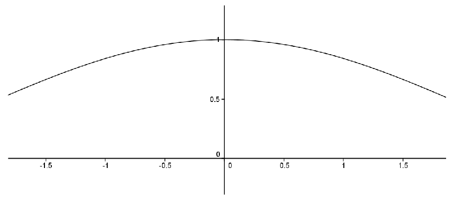

Section 9.3 The Definition of the Limit of a Function
Since these days the limit concept is generally regarded as the starting point for calculus, you might think it is a little strange that we’ve chosen to talk about continuity first. But historically, the formal definition of a limit came after the formal definition of continuity. In some ways, the limit concept was part of a unification of all the ideas of calculus that were studied previously and, subsequently, it became the basis for all ideas in calculus. For this reason it is logical to make it the first topic covered in a calculus course.
To be sure, limits were always lurking in the background. In his attempts to justify his calculations, Newton used what he called his doctrine of “Ultimate Ratios.” Specifically the ratio
\(\frac{(x+h)^2-x^2}{h} = \frac{2xh+h^2}{h} = 2x+h\) becomes the ultimate ratio
\(2x\) at the last instant of time before
\(h\) - an “evanescent quantity” - vanishes (
[4], p. 33). Similarly Leibniz’s “infinitely small” differentials
\(\dx{ x}\) and
\(\dx{ y}\) can be seen as an attempt to get “arbitrarily close” to
\(x\) and
\(y\text{,}\) respectively. This is the idea at the heart of calculus: to get arbitrarily close to, say,
\(x\) without actually reaching it.
As we saw in
Chapter 5, Lagrange tried to avoid the entire issue of “arbitrary closesness,” both in the limit and differential forms when, in 1797, he attempted to found calculus on infinite series.
Although Lagrange’s efforts failed, they set the stage for Cauchy to provide a definition of derivative which in turn relied on his precise formulation of a limit. Consider the following example: to determine the slope of the tangent line (derivative) of \(f(x) = \sin x\) at \(x=0\text{.}\) We consider the graph of the difference quotient \(D(x) =\frac{\sin x }{x}\text{.}\)

From the graph, it appears that
\(D(0) =1\) but we must be careful.
\(D(0)\) doesn’t even exist! Somehow we must convey the idea that
\(D(x)\) will approach
\(1\) as
\(x\) approaches
\(0\text{,}\) even though the function is not defined at
\(0\text{.}\) Cauchy’s idea was that the limit of
\(D(x)\) would equal
\(1\) because we can make
\(D(x)\) differ from 1 by as little as we wish (
[6], p. 158).
Karl Weierstrass made these ideas precise in his lectures on analysis at the University of Berlin (1859-60) and provided us with our modern formulation.
Definition 9.3.1.
We say \(\limit{x}{a}{f(x)} =L\) provided that for each \(\eps>0\text{,}\) there exists \(\delta>0\) such that if \(0\lt \abs{x-a}\lt \delta\) then \(\abs{f(x)-L}\lt \eps\text{.}\)
Before we delve into this, notice that it is very similar to the definition of the
continuity of
\(f(x)\) at
\(x=a\text{.}\) In fact we can readily see that
\(f \text{ is continuous at } x=a \text{ if and only if }
\limit{x}{a}{f(x)} = f(a)\text{.}\)
There are two differences between this definition and the definition of continuity and they are related. The first is that we replace the value \(f(a)\) with \(L\text{.}\) This is because the function may not be defined at \(a\text{.}\) In a sense the limiting value \(L\) is the value \(f\) would have if it were defined and continuous at \(a\text{.}\) The second is that we have replaced
\begin{equation*}
\abs{x-a}\lt \delta
\end{equation*}
with
\begin{equation*}
0\lt \abs{x-a}\lt \delta\text{.}
\end{equation*}
Again, since \(f\) needn’t be defined at \(a\text{,}\) we will not even consider what happens when \(x=a\text{.}\) This is the only purpose for this change.
As with the definition of the limit of a sequence, this definition does not determine what \(L\) is, it only verifies that your guess for the value of the limit is correct.
Finally, a few comments on the differences and similiarities between this limit and the limit of a sequence are in order, if for no other reason than because we use the same notation (\(\lim\)) for both.
When we were working with sequences in
Chapter 7 and wrote things like
\(\limit{n}{\infty}{a_n}\) we were thinking of
\(n\) as an integer that got bigger and bigger. To put that more mathematically, the limit parameter
\(n\) was taken from the set of positive integers, or
\(n\in \NN\text{.}\)
For both continuity and the limit of a function we write things like
\(\limit{x}{a}{f(x)}\) and think of
\(x\) as a variable that gets arbitrarily close to the number
\(a\text{.}\) Again, to be more mathematical in our language we would say that the limit parameter
\(x\) is taken from the
\(\ldots\) Well, actually, this is interesting isn’t it? Do we need to take
\(x\) from
\(\QQ\) or from
\(\RR?\) The requirement in both cases is simply that we be able to choose
\(x\) arbitrarily close to
\(a\text{.}\) From
Theorem 3.0.11 of
Chapter 3 we see that this is possible whether
\(x\) is rational or not, so it seems either will work. This leads to the pardoxical sounding conclusion that we do not need a continuum (
\(\RR\)) to have continuity. This seems strange.
Before we look at the above example, let’s look at some algebraic examples to see the definition in use.
Example 9.3.2.
Consider the function \(D(x)=\frac{x^2-1}{x-1}\text{,}\) \(x\neq 1\text{.}\) You probably recognize this as the difference quotient used to compute the derivative of \(f(x)=x^2\) at \(x=1\text{,}\) so we strongly suspect that \(\limit{x}{1}{\frac{x^2-1}{x-1}}=2\text{.}\) Just as when we were dealing with limits of sequences, we should be able to use the definition to verify this. And as before, we will start with some scrapwork.
SCRAPWORK
Let \(\eps>0\text{.}\) We wish to find a \(\delta>0\) such that if \(0\lt \abs{x-1}\lt \delta\) then \(\abs{\frac{x^2-1}{x-1}-2}\lt \eps\text{.}\) With this in mind, we perform the following calculations
\begin{equation*}
\abs{\frac{x^2-1}{x-1}-2}=\abs{(x+1)-2} = \abs{x-1}\text{.}
\end{equation*}
Now we have a handle on \(\delta\) that will work in the definition and we’ll give the formal proof that
\begin{equation*}
\limit{x}{1}{\frac{x^2-1}{x-1}}=2\text{.}
\end{equation*}
Proof.
Let \(\eps>0\) and let \(\delta=\eps\text{.}\) If \(0\lt \abs{x-1}\lt \delta\text{,}\) then
\begin{equation*}
\abs{\frac{x^2-1}{x-1}-2}=\abs{(x+1)-2}=\abs{x-1}\lt \delta=\eps\text{.}
\end{equation*}
As in our previous work with sequences and continuity, notice that the scrapwork is not part of the formal proof (though it was necessary to determine an appropriate \(\delta)\text{.}\) Also, notice that \(0\lt \abs{x-1}\) was not really used except to ensure that \(x\neq 1\text{.}\)
Problem 9.3.3.
Use the definition of a limit to verify that
\begin{equation*}
\limit{x}{a}{\frac{x^2-a^2}{x-a}}=2a.{}
\end{equation*}
Problem 9.3.4.
Use the definition of a limit to verify each of the following limits.
(a)
\(\limit{x}{1}{\frac{x^3-1}{x-1}}=3\)
Hint.
\begin{align*}
\abs{\frac{x^3-1}{x-1}-3} \amp = \abs{x^2+x+1-3}\\
\amp \leq\abs{x^2-1}+\abs{x-1}\\
\amp =\abs{(x-1+1)^2-1}+\abs{x-1}\\
\amp =\abs{(x-1)^2+2(x-1)}+\abs{x-1}\\
\amp \leq\abs{x-1}^2 + 3\abs{x-1}\text{.}
\end{align*}
(b)
\(\limit{x}{1}{\frac{\sqrt{x}-1}{x-1}}=1/2\)
Hint.
\begin{align*}
\abs{\frac{\sqrt{x}-1}{x-1}-\frac12}\amp = \abs{\frac{1}{\sqrt{x}+1}-\frac12}\\
\amp =\abs{\frac{2-\left(\sqrt{x}+1\right)}{2\left(\sqrt{x}+1\right)}}\\
\amp =\abs{\frac{1-x}{2\left(1+\sqrt{x}\right)^2}}\\
\amp \leq\frac12\abs{x-1}.{}
\end{align*}
Let’s go back to the original problem: to show that \(\limit{x}{0}{\textstyle\frac{\sin x}{x}}=1\text{.}\)
While rigorous, our definition of continuity is quite cumbersome. We really need to develop some tools we can use to show continuity rigorously without having to refer directly to the definition. We have already seen in
Theorem 9.2.1 one way to do this. Here is another. The key is the observation we made after the definition of a limit:
\begin{equation*}
f \text{ is continuous at } x=a \text{ if and only if } \limit{x}{a}{f(x)}=f(a)\text{.}
\end{equation*}
Read another way, we could say that \(\limit{x}{a}{f(x)}=L\) provided that if we redefine \(f(a)=L\) (or define \(f(a)=L\) in the case where \(f(a)\) is not defined) then \(f\) becomes continuous at \(a\text{.}\) This allows us to use all of the machinery we proved about continuous functions and limits of sequences.
For example, the following corollary to
Theorem 9.2.1 comes virtually for free once we’ve made the observation above.
Corollary 9.3.5.
\(\limit{x}{a}{f(x)}=L\) if and only if \(f\) satisfies the following property:
\begin{equation*}
\forall \text{ sequences } (x_n), x_n\ne a, \text{ if } \limit{n}{\infty}{x_n}=a \text{ then } \limit{n}{\infty}{f(x_n)}=L. {}
\end{equation*}
Armed with this, we can prove the following familiar limit theorems from calculus.
Theorem 9.3.6.
Suppose \(\limit{x}{a}{f(x)}=L\) and \(\limit{x}{a}{g(x)}=M\text{,}\) then
\(\displaystyle \limit{x}{a}{\left(f(x)+g(x)\right)}=L+M\)
\(\displaystyle \limit{x}{a}{\left(f(x)\cdot g(x)\right)}=L\cdot M\)
\(\limit{x}{a}{\left(\frac{f(x)}{g(x)}\right)}=L/M\) provided \(M\ne0\) and \(g(x)\ne{}0\text{,}\) for \(x\) sufficiently close to a (but not equal to \(a\)).
We will prove part (a) to give you a feel for this and let you prove parts (b) and (c).
Proof.
Let
\(\left(x_n\right)\) be a sequence such that
\(x_n\ne
a\) and
\(\limit{n}{\infty}{x_n}=a\text{.}\) Since
\(\limit{x}{a}{f(x)} = L\) and
\(\limit{x}{a}{g(x)} =
M\) we see that
\(\limit{n}{\infty}{f(x_n)} = L\) and
\(\limit{n}{\infty}{g(x_n)} = M\text{.}\) By
Theorem 7.2.4 of
Chapter 7, we have
\(\limit{n}{\infty}{f(x_n)+g(x_n)}=L+M\text{.}\) Since
\(\left\{x_n\right\}\) was an arbitrary sequence with
\(x_n\ne a\) and
\(\limit{n}{\infty}{x_n} = a\) we have
\begin{equation*}
\limit{x}{a}{f(x)+g(x)} = L+M\text{.}
\end{equation*}
Problem 9.3.7.
More in line with our current needs, we have a reformulation of the Squeeze Theorem.
Theorem 9.3.8.
Squeeze Theorem for functions
Suppose \(f(x)\le g(x) \le h(x)\text{,}\) for \(x\) sufficiently close to \(a\) (but not equal to \(a\)). If \(\limit{x}{a}{f(x)}=L=\limit{x}{a}{h(x)}\text{,}\) then \(\limit{x}{a}{g(x)}=L\) also.
Problem 9.3.9.
Returning to \(\limit{x}{0}{\frac{\sin x}{x}}\) we’ll see that the Squeeze Theorem is just what we need. First notice that since \(D(x)=\sin x/x\) is an even function, we only need to focus on \(x>0\) in our inequalities. Consider the unit circle.
Problem 9.3.10.
Use the fact that
\begin{equation*}
\text{ area } (\Delta OAC)\lt \text{ area } (\text{ sector } OAC)\lt \text{ area } (\Delta OAB)
\end{equation*}
to show that if \(0\lt x\lt \pi/2\text{,}\) then \(\cos x\lt
\sin x/x\lt 1\text{.}\) Use the fact that all of these functions are even to extend the inequality for \(-\pi/2\lt x\lt
0\) and use the Squeeze Theorem to show \(\limit{x}{0}{\textstyle\frac{\sin x}{x}}=1\text{.}\)